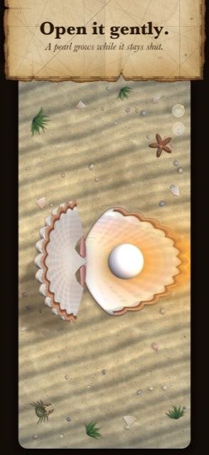
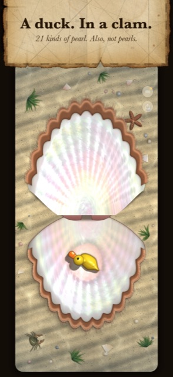
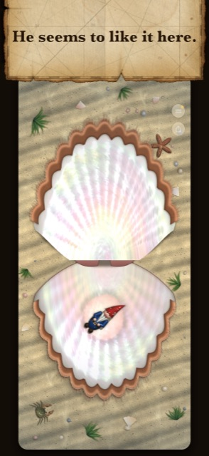
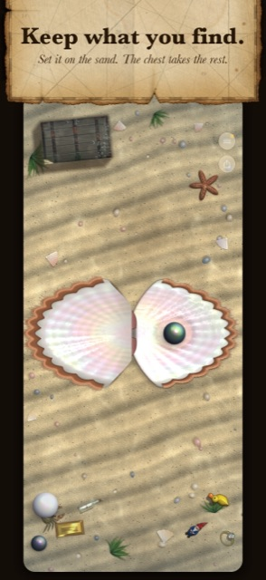
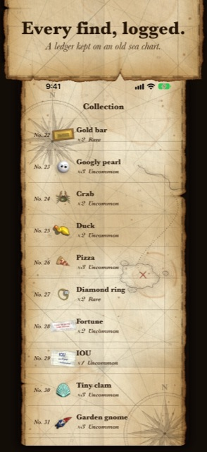
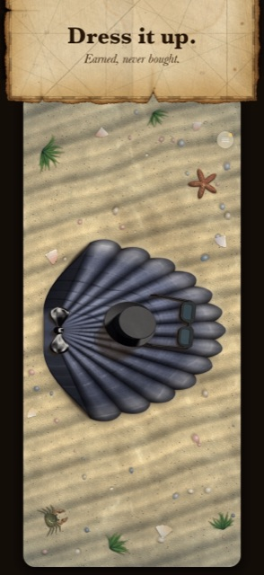
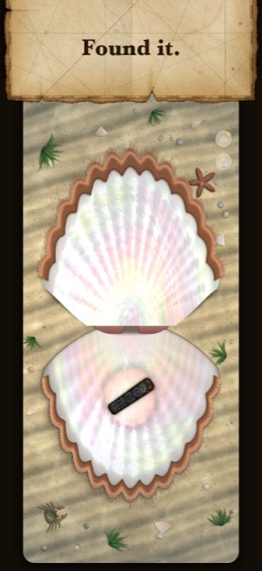
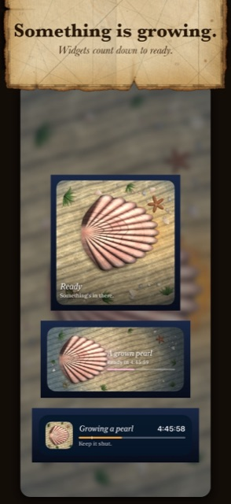
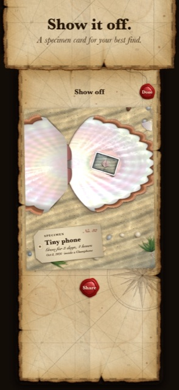

Press Kit
Clamphone: Fold to Open
In one paragraph
Apple’s first foldable iPhone opens like a clam, so Clamphone turns it into one. A scallop lies on the sea floor, seen from straight above. Unfold the phone and the clam opens with the hinge, creaking all the way. Keep it shut and a pearl grows inside. Open it and you might find one of 21 pearls, or a rubber duck. It is a $0.99 novelty in the tradition of the old iBeer gag, where the phone becomes the object, played completely straight. There are no ads, no in-app purchases and no data collected.
Key facts
- Name
- Clamphone: Fold to Open
- Developer
- Arrow IT (Chris Arrow, solo developer)
- Release
- 23 October 2026, the day Apple’s foldable iPhone reaches customers. Available to pre-order on the App Store before then.
- Price
- $0.99 (US). No ads, no in-app purchases, no subscriptions.
- Platform
- iPhone, iOS 27 or later. Made for the foldable; on a phone that doesn’t fold, you tap to open.
- Privacy
- No data collected. No accounts. The app makes no network connections.
- App Store
- apps.apple.com/app/id6820744662
- Press contact
- clam@chrisarrow.com
Short description
Your phone opens like a clam, so here is a clam. Keep it shut and a pearl grows. Unfold it gently to see. It might be a pearl. It might be a duck.
Long description
Clamphone is a scallop on the sea floor, seen straight down, the size of your phone. When you unfold a foldable iPhone, the clam opens with the hinge, rib by rib, with a real recorded creak and a click under your thumb for every rib.
While the clam stays shut, a pearl grows. Open it after a minute and you get sand. After an hour, a pearl. Leave it eight hours and the rare ones start turning up: golden, peacock, baroque, a giant one, triplets, and a moon pearl that only comes out at night. Open it too fast and the clam flinches. Keep doing that and it hides.
Sometimes there is something in there that should not be. A rubber duck. A garden gnome. The TV remote. One earbud. A tiny phone. Every find is rendered like the real thing, lying in shallow water, and nobody winks.
You drag your finds out onto the sand and arrange them however you like. When the sand is full, an old sea chest rises out of it to keep the rest. A journal kept on a weathered sea chart logs every find. The clam can be dressed up with a limpet, barnacles, a bow tie, a coral tiara or a top hat, all earned and none sold. The light moves as you tilt the phone. Home Screen and Lock Screen widgets and a Live Activity count down to “ready”, and a specimen card lets you show off your best find.
It is a novelty, and it knows it. It costs 99 cents once and asks for nothing else.
Features
- The hinge is the controller: unfold the phone and the clam opens with it
- A real recorded creak, and a haptic click for every rib
- Pearls grow while the clam stays shut; the longer, the rarer
- 36 finds: 21 kinds of pearl, plus things that should not be in a clam
- Open it gently: snap it open and it flinches, then hides
- Arrange finds on the sand; a sea chest rises when it’s full
- A sea-chart journal with a ledger of every find, and achievements
- Dress-ups, earned rather than bought
- Light that follows the tilt of the phone
- Home Screen and Lock Screen widgets, and a Live Activity
- A shareable specimen card for your best find
- No ads, no in-app purchases, no accounts, no data collected
From the clam
“A duck. In a clam.” (rubber duck)
“He seems to like it here.” (garden gnome)
“Found it.” (TV remote)
“Just the left one.” (one earbud)
“Hold on.” (tiny phone)
“Someone is going to be very upset” (diamond ring)
“It’s clams all the way down” (tiny clam)
“A quahog pearl. Finally, one from an actual clam.” (quahog pearl)
Screenshots
Tap for full size (1320 × 2868). Captioned versions match the App Store listing; clean versions have no captions.


















Downloads
- Everything, zipped (icon, logo, screenshots, video, fact sheet)
- App icon: 1024 · 512 · 256 · 128 · dark · tinted (square PNG; iOS applies the rounded corners)
- Logo: wordmark, dark ink · wordmark, light · icon and wordmark on parchment (transparent PNG)
- Screenshots: in the zip above, or open single images from the gallery (1320 × 2868 JPEG, captioned and clean)
- Video: promo clip
- Fact sheet (plain text, for copying)


Free to use in coverage of the app. Promo codes and review copies are available on request.
Contact
Chris Arrow answers press mail himself, usually the same day.
Clamphone is an independent app. It is not made, sponsored or endorsed by Apple. iPhone and App Store are trademarks of Apple Inc.